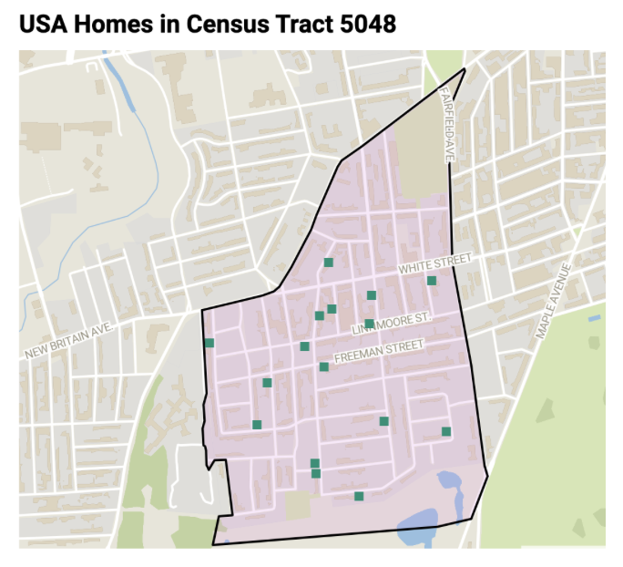

by Ainsley Steele and Elizabeth Murphy
Last updated on editor December 5, 2024
for Data Visualization for Allwith Prof. Jack DoughertyTrinity College, Hartford CT, USA

An innovative strategy to combat the affordable housing shortage are “community land trusts” (CLTs).
An innovative strategy to combat the affordable housing shortage are “community land trusts” (CLTs). Finding affordable and accessible housing is a crisis that families and communities have to grapple with all over the world. CLTs are created by non-profit organizations to make homeownership more attainable. Community land trusts are designed to provide and maintain affordable housing as an feasible opportunity. CLTs acquire ownership of land, while allowing residents to purchase the homes on the land. This separates the ownership of the land from the houses, helping to reduce housing costs and ensure long-term affordability.
In the Hartford region, an example of a community land trust is Urban Suburban Affordables (USA), Inc. USA has over 200 homes right in our community. Nonprofits, like USA, are pivotal in communities to make housing more affordable and can be used as a way to stabilize the community, particularly for low and moderate income families. Not only do these land trusts provide affordable living, which can open up many opportunities for the future, it can provide people with a kind of financial literacy that is not otherwise provided. Community land trusts are essential tools for addressing housing inequality and preserving affordability.
How do our homes compare to similar neighborhoods or blocks? To answer this question, we investigated how a sample of USA homes measures up to comparable homes, or comps, in southwest Hartford, census tract 5048. Within the census tract 5048, there were three roads that contained multiple USA homes. Those three roads were Hillside Avenue, Linnmoore Street, and Roger Street. We primarily focused on the USA homes on those streets and comparable properties that were surrounding the USA properties. We focused on three non-US homes on Hillside Avenue and three non-US homes on Linnmoore Street. There were four USA homes on Roger Street, so we focused on fourteen non-USA homes, about three homes per USA home on Roger Street. Comparable properties are usually located within the same neighborhood or nearby area with similar market conditions, have similar square footage, lot size, and number of bedrooms and bathrooms. Through comparing similar properties, one can measure pricing, valuation, negotiation, and market analysis, being an essential tool for people involved in real estate.
Is the USA program working as designed? Community Land Trusts (CLTs) like Urban Suburban Affordables (USA) play a critical role in addressing housing inequality by maintaining affordability in the face of rising property values. By separating land ownership from homeownership, CLTs ensure long-term housing affordability while fostering stability and financial literacy for low- to moderate-income families. "Working as designed" for a community land trust means achieving these goals—providing homes at sustainable prices while empowering communities. If USA homes hold market values similar to comparable properties, it indicates a balance between affordability and market viability, suggesting success in their mission to stabilize neighborhoods without devaluing assets. This alignment underscores how CLTs can offer equitable housing solutions which integrate affordability with quality living standards.
The four bar graphs compare market values of properties on a Hillside Avenue block, a Linnmoore Street block, and two locations on Roger Street. Properties in dark blue are USA Homes, while the gray bars represent single-family homes not in the community land trust, but in the same neighborhood. The value of single family homes varies reflecting differences in condition, age, and general characteristics (bedrooms, bathrooms, and square footage).
Figure 1.1: Hillside Avenue Comparsion Infomation
Figure 1.2: Linnmoore Street Comparsion
Figure 1.3: Roger Street Comparsion (H61). Explore the interactive chart
Figure 1.4: Roger Street Comparsion (H62 and H63). Explore the interactive chart
General Conclusions
Hillside Avenue Block: Properties A, C, and D (non-USA Homes) show similar market values and property B has a slightly lower market value.
Linnmoore Street Block: Properties D and F (USA Homes) show higher or comparable market values relative to property E.
Roger Street (house in the lower numbers): Property A (USA-Home) has a slightly lower market value than the surrounding properties
Roger Street (two USA-homes in close proximity, higher numbers): The homes surrounding Property A and B (the USA homes) are more scattered, as properties, such as F are higher and properties, such as E are lower than the USA homes.
Importance
The graphs suggest that homes in a community land trust (CLT) may have similar or even higher market values compared to some single-family homes on these blocks. This challenges assumptions that CLT homes are significantly undervalued in the real estate market, demonstrating that they can retain competitive market values while promoting affordability.
Market value is a crucial factor for a community land trust because it directly influences the trust’s ability to fulfill its mission of providing affordable housing. Market value affects the cost of purchasing and maintaining land. High land values can make it challenging for CLTs to acquire properties. Lower market values allow CLTs to purchase land more affordably, increasing their ability to provide housing at below market rates. Market value also influences resale prices of homes. A balance is needed between affordability for future buyers and allowing current homeowners to build equity. High market values in the surrounding area can pressure a CLT to ensure affordability while managing rising costs.
The following charts show the market value growth over a ten year period, based on zillow estimates. The first group of charts shows one USA-homes and two non-USA home on Linnmoore street. The second group of charts also shows one USA-home and two non-USA homes on, but on Roger Street. This chart is from Zillow. As mentioned before, Zillow tends to overestimate prices, but the trends shown are still relevant.
Figure 2.1: Market Value Growth Comparsion on Linnmoore Street. Explore the interactive chart
Figure 2.2: Market Value Growth Comparsion on Roger Street. Explore the interactive chart
All 3 properties show an increase in market value, including the USA home, with notable increases around 2020-2024, likely influenced by housing market trends. The rates of growth vary, with the second house shown here experiencing the steepest incline in value, particularly after 2020. H52 is the USA home on this block and the upward trend in market value suggests resale restrictions would be necessary to maintain affordability for future residents. Without these measures, rising values could challenge the community land trust’s goal of providing long-term affordable housing. The increase in property value for all homes indicates the area (street block) has likely become more desirable. For a community land trust, the growth can be used to assess how to balance resident affordability with neighborhood improvement trends.
The USA home and the non-USA Home on Roger Street had similar patterns and trends in price over time. The non-USA home throughout the pandemic had a slightly more steady increase while the USA Home value was more sporadic. This pattern makes sense because the pandemic was a time of extreme uncertainty, from paychecks and jobs themselves not always being secured, making affordable housing more appealing. Tracking market value growth allows CLJ to track the different changes and patterns in the neighborhood of the USA homes so that the USA homes can stay up to the trends with the subsequent neighborhood.
Figure 3:Owner-Occupied Rate of USA homes. Explore the interactive chart
This data is looking at the number of housing units in census tract 5048. To determine the owner-occupied rate, the number of renter occupied units is subtracted from the number of occupied housing units
Owner-occupied units = 1,794 - 591 = 1,203
The number of owner occupied units is then divided by the number of occupied housing units, multiplied by 100.
Owner-Occupied rate = (1,203 / 1,794) x 100 = 67.1%
This data shows 67.1% of occupied housing units are owner occupied, while 32.9% are renter occupied. The 53 vacant units results in a vacancy rate of 2.87%. The information suggests the census tract 5048 has a relatively tight housing market.
The data from the census tract can be linked to the concept of CLT homes to illustrate their potential impact on owner-occupancy rates.
If USA homes are 100% owner occupied, it reflects CLJs commitment to providing affordable, stable housing and building wealth through ownership. The assumption of 100% owner occupancy is based on data and is our belief. Without clear evidence, this is a strong assumption rather than a fact. If USA homes are 100% owner-occupied, this underscores the effectiveness of CLTs in promoting sustainable homeownership models.
If USA homes are entirely owner-occupied, it indicates CLT properties may be positively contributing to higher owner-occupancy rates within the neighborhoods they are located in. This is especially significant in areas where renter-occupied housing is dominant, as CLTs help shift the balance toward ownership. High owner-occupancy rates are associated with increased community stability and better maintenance of properties.
This data provides insights into foreclosure rates in Southwest Hartford compared to rates in census tract 5048. This data is critical for identifying and comparing foreclosure trends across different samples. Foreclosure rates are an important metric and are helpful for assessing housing market stability.
Figure 4: Explore the interactive chartThis table represents a larger sample of data from Southwest Hartford. In this table. Foreclosures account for approximately 15 out of 1,597 total sales, resulting in a foreclosure rate of approximately 0.94% of all recorded sales. This low rate suggests a relatively stable housing market across the southwest Hartford area. A relatively low foreclosure rate suggests a relatively stable housing market.
Figure 5: Explore the interactive chartThis table depicts the sale code for USA/CLJ properties in the census tract. Foreclosures make up 1 out of 14 transactions or 7.14%. While this rate appears significantly higher, the sample size is much smaller (14 transactions). A single foreclosure in a small sample can disproportionately impact the rate as each instance carries more statistical weight. A single foreclosure might reflect an isolated incident rather than a systemic issue. It does not necessarily indicate these home are less stable or are more prone to foreclosure.The larger sample provides a more reliable foreclosure trend, while the smaller sample’s rate is less representative.Foreclosures can impact perceptions of housing stability and economic challenges. The larger southwest Hartford market shows stability and percentages in small datasets can be misleading. The higher foreclosure rate should be interpreted as a data point, not as conclusive evidence of a problem.
These graphs compare the amount of individual owned homes and the buildings that are under a LLC on Roger Street. The homes included in this chart are the same single-family homes that we used in the previous graphics. All of the USA homes in our dataset were individually owned, so there is no need to differentiate in a binary variable like ownership rate. Each graph shows the USA homes surrounding each of the featured USA homes on Roger Street.
Figure 6.1: Individual vs LLC Ownership on Roger Street (H61). Exlpore the interactive chart
Figure 6.2: Individual vs LLC Ownership on Roger Street (H62 & H63). Explore the interactive chart
As shown through the graphs, most of the properties surrounding USA homes are individually owned and not owned by a business or corporation. LLC’s are most likely trying to convert the homes into rental properties. Rental properties could be a downside for people that want to build up equity. This is further insight on the makeup of the neighborhoods USA homes are located in Census Tract 5048. This is important information to know because it might not be desirable for future USA home-owners to live in a neighborhood that is surrounded by businesses and instead would prefer a neighborhood setting.
To compare properties in this census tract, USA/CLJ homes provided addresses for the properties they manage. From this data spreadsheet, we cleaned it to remove all properties not located in Hartford, then sorted all remaining data by our census tract. To gather data on the properties in census tract 5048, we used appraiser field cards from the city of Hartford Open Data Repository, CAMAGIS property assessor and information we found on Zillow. CAMAGIS is a software that integrates CAMA and GIS systems that allows viewers to gather data and create visualizations using the information provided, through maps and property information. It was crucial to clean and sort the data found in this dataset, as it was very large and overwhelming to extract any information as it stood. After some time, we realized that there were three streets within our census tract that had many USA properties; Hillside Avenue, Linnmoore Street and Roger Street. We then further divided the spreadsheets by streets and worked on creating our visualizations from that point. Since our information and findings will be public for all to see, to protect the privacy of the homeowners, we could not include specific addresses. Instead, we used various techniques to distinguish between non-USA homes and USA homes; color-coded, letter code and having separate graphs of the data.
There were a couple of instances that we felt it was important to include some caveats and our trepidation including some data. First, an important caveat to note is that Zillow has the tendency to overestimate the prices of homes. Although an overestimation is not ideal, the information we used from Zillow was still important and valuable in observing significant trends and patterns. Also, despite our best efforts, something we could not control is that some of the data was not available. However, although also not ideal, it did not profoundly affect our insights and data collection.
All of our sources were given to us by Jack in a dataset. Any additional research we did we use Zillow. Due to reasons stated above, for the sake of privacy of current and future homeowners of the USA homes and the surrounding homes, we cannot include our sources.